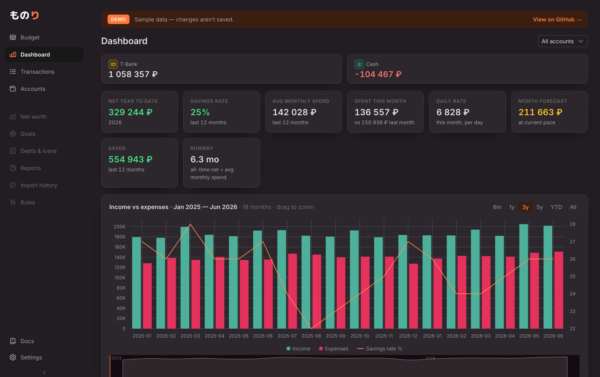
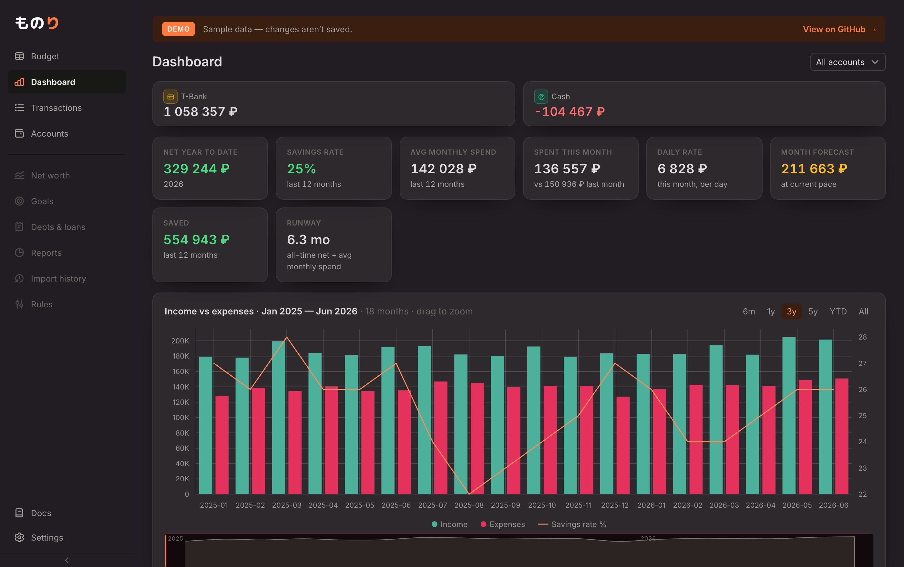
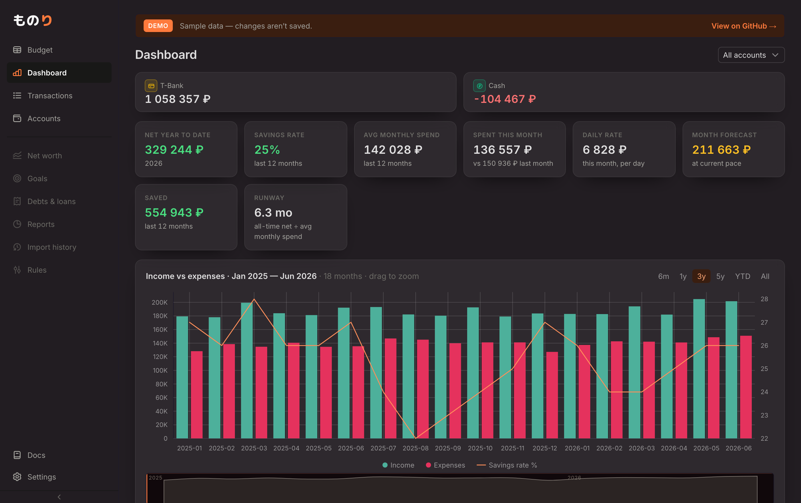
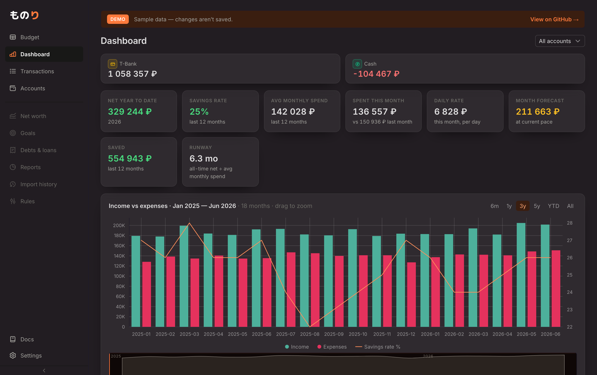
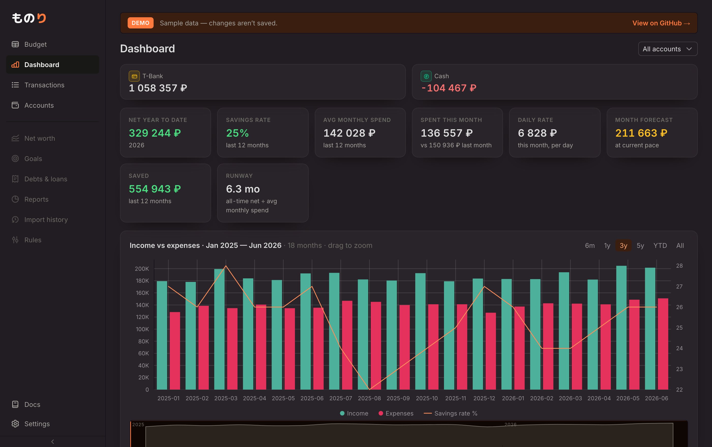
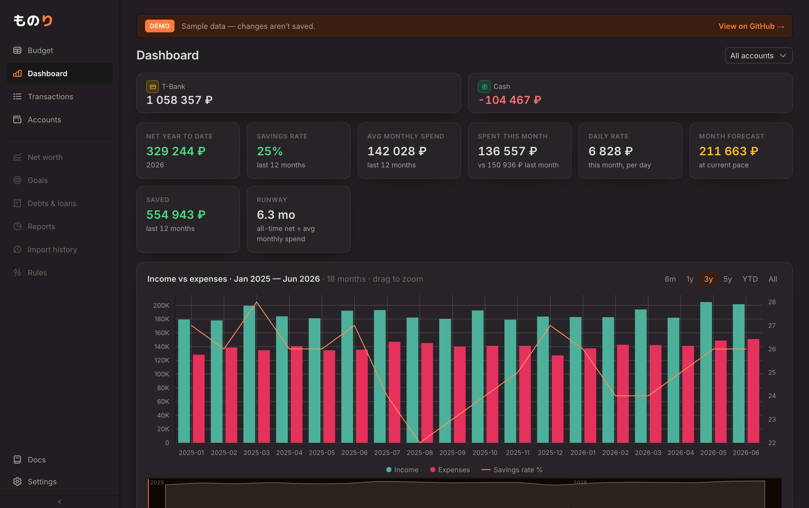

База — C4: фиолетовое свечение на холсте, карточки — матовое стекло. Принцип,
который ты назвала: фон темнее элементов (карточки светлее холста). Холст и
секции сдвинуты глубже в тёмное, свечение сохранено. Три градации глубины — выбери, и
применю в theme.css (web + web-docs). Реальный дашборд /demo.





